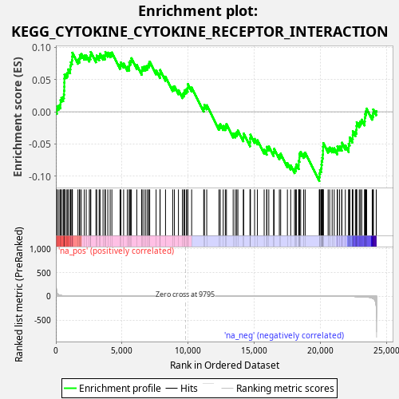
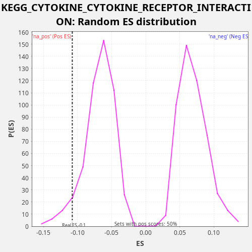

| Dataset | LabCL |
| Phenotype | NoPhenotypeAvailable |
| Upregulated in class | na_neg |
| GeneSet | KEGG_CYTOKINE_CYTOKINE_RECEPTOR_INTERACTION |
| Enrichment Score (ES) | -0.1076321 |
| Normalized Enrichment Score (NES) | -1.5757389 |
| Nominal p-value | 0.057654075 |
| FDR q-value | 0.18558177 |
| FWER p-Value | 0.984 |

| SYMBOL | RANK IN GENE LIST | RANK METRIC SCORE | RUNNING ES | CORE ENRICHMENT | |
|---|---|---|---|---|---|
| 1 | CCL5 | 76 | 84.339 | 0.0033 | No |
| 2 | IL6ST | 106 | 62.022 | 0.0086 | No |
| 3 | IL6 | 234 | 27.409 | 0.0098 | No |
| 4 | TNFSF4 | 346 | 18.083 | 0.0117 | No |
| 5 | PRLR | 350 | 17.874 | 0.0181 | No |
| 6 | CNTFR | 422 | 14.780 | 0.0217 | No |
| 7 | CXCR4 | 549 | 10.684 | 0.0229 | No |
| 8 | IFNB1 | 606 | 9.116 | 0.0271 | No |
| 9 | TSLP | 622 | 8.734 | 0.0330 | No |
| 10 | TNFRSF19 | 635 | 8.547 | 0.0389 | No |
| 11 | PDGFRB | 639 | 8.498 | 0.0453 | No |
| 12 | TNFRSF14 | 645 | 8.395 | 0.0516 | No |
| 13 | IL7 | 655 | 8.211 | 0.0577 | No |
| 14 | IL15RA | 790 | 6.386 | 0.0587 | No |
| 15 | VEGFB | 896 | 5.368 | 0.0608 | No |
| 16 | FLT1 | 931 | 5.009 | 0.0659 | No |
| 17 | TNFSF13B | 1080 | 3.929 | 0.0662 | No |
| 18 | CXCL10 | 1096 | 3.825 | 0.0721 | No |
| 19 | TNFRSF9 | 1137 | 3.622 | 0.0769 | No |
| 20 | LIFR | 1218 | 3.187 | 0.0801 | No |
| 21 | CCL3L3 | 1237 | 3.109 | 0.0858 | No |
| 22 | VEGFC | 1251 | 3.048 | 0.0918 | No |
| 23 | CCL3 | 1670 | 1.738 | 0.0809 | No |
| 24 | TNFRSF11B | 1784 | 1.522 | 0.0827 | No |
| 25 | IL21R | 1812 | 1.485 | 0.0881 | No |
| 26 | CSF1 | 1924 | 1.309 | 0.0900 | No |
| 27 | IL1R1 | 2146 | 1.062 | 0.0873 | No |
| 28 | TGFBR1 | 2295 | 0.912 | 0.0877 | No |
| 29 | TNFSF10 | 2530 | 0.745 | 0.0845 | No |
| 30 | CCL28 | 2611 | 0.690 | 0.0876 | No |
| 31 | TGFB2 | 2642 | 0.671 | 0.0929 | No |
| 32 | EPOR | 3030 | 0.489 | 0.0833 | No |
| 33 | KDR | 3087 | 0.463 | 0.0875 | No |
| 34 | CCR1 | 3271 | 0.401 | 0.0864 | No |
| 35 | TNFSF13 | 3341 | 0.379 | 0.0900 | No |
| 36 | OSMR | 3567 | 0.321 | 0.0871 | No |
| 37 | TNFRSF10B | 3711 | 0.287 | 0.0877 | No |
| 38 | IL15 | 3743 | 0.282 | 0.0929 | No |
| 39 | INHBE | 3926 | 0.246 | 0.0919 | No |
| 40 | IL20 | 4104 | 0.215 | 0.0910 | No |
| 41 | CXCL11 | 4235 | 0.196 | 0.0921 | No |
| 42 | IL6R | 4852 | 0.126 | 0.0730 | No |
| 43 | IL13RA1 | 4919 | 0.121 | 0.0768 | No |
| 44 | BMPR2 | 5122 | 0.104 | 0.0749 | No |
| 45 | TNFRSF1B | 5400 | 0.085 | 0.0699 | No |
| 46 | VEGFD | 5545 | 0.077 | 0.0704 | No |
| 47 | LTBR | 5548 | 0.077 | 0.0768 | No |
| 48 | IL7R | 5646 | 0.071 | 0.0793 | No |
| 49 | PLEKHO2 | 5708 | 0.068 | 0.0832 | No |
| 50 | CXCL2 | 6118 | 0.049 | 0.0727 | No |
| 51 | IL12A | 6487 | 0.036 | 0.0640 | No |
| 52 | LTA | 6519 | 0.035 | 0.0692 | No |
| 53 | TNFSF14 | 6657 | 0.032 | 0.0700 | No |
| 54 | CCR10 | 6797 | 0.028 | 0.0707 | No |
| 55 | TNFSF12 | 6927 | 0.025 | 0.0718 | No |
| 56 | PDGFB | 7013 | 0.023 | 0.0748 | No |
| 57 | AMH | 7095 | 0.021 | 0.0779 | No |
| 58 | CCL2 | 7578 | 0.013 | 0.0644 | No |
| 59 | VEGFA | 7871 | 0.009 | 0.0588 | No |
| 60 | IL24 | 7880 | 0.009 | 0.0650 | No |
| 61 | TNFSF18 | 8289 | 0.005 | 0.0545 | No |
| 62 | IFNGR1 | 8831 | 0.002 | 0.0385 | No |
| 63 | CSF3R | 8961 | 0.001 | 0.0397 | No |
| 64 | ACVR2A | 9266 | 0.001 | 0.0336 | No |
| 65 | CX3CL1 | 9568 | 0.000 | 0.0276 | No |
| 66 | TGFB3 | 9668 | 0.000 | 0.0299 | No |
| 67 | IL1RAP | 9739 | 0.000 | 0.0335 | No |
| 68 | CCL13 | 9862 | 0.000 | 0.0350 | No |
| 69 | FLT3 | 9962 | 0.000 | 0.0373 | No |
| 70 | INHBC | 9983 | 0.000 | 0.0430 | No |
| 71 | TNF | 10265 | 0.000 | 0.0378 | No |
| 72 | CXCR5 | 11176 | -0.002 | 0.0066 | No |
| 73 | ACVR1 | 11227 | -0.002 | 0.0110 | No |
| 74 | CSF1R | 11404 | -0.003 | 0.0102 | No |
| 75 | CNTF | 12327 | -0.009 | -0.0216 | No |
| 76 | IFNE | 12426 | -0.010 | -0.0192 | No |
| 77 | KIT | 12650 | -0.013 | -0.0220 | No |
| 78 | CXCL1 | 12810 | -0.015 | -0.0221 | No |
| 79 | CXCL8 | 12895 | -0.016 | -0.0191 | No |
| 80 | EGF | 13403 | -0.023 | -0.0336 | No |
| 81 | CCR3 | 13559 | -0.026 | -0.0336 | No |
| 82 | PDGFA | 13671 | -0.028 | -0.0317 | No |
| 83 | IL11RA | 13760 | -0.030 | -0.0288 | No |
| 84 | CD40 | 14171 | -0.039 | -0.0394 | No |
| 85 | IL10RB | 14197 | -0.040 | -0.0339 | No |
| 86 | MPL | 14675 | -0.053 | -0.0472 | No |
| 87 | GHR | 14687 | -0.053 | -0.0412 | No |
| 88 | IL12RB2 | 14709 | -0.054 | -0.0355 | No |
| 89 | IL22RA1 | 15022 | -0.066 | -0.0420 | No |
| 90 | TNFRSF1A | 15233 | -0.074 | -0.0442 | No |
| 91 | IL1A | 15745 | -0.093 | -0.0589 | No |
| 92 | GDF5 | 15935 | -0.102 | -0.0603 | No |
| 93 | CXCL3 | 15949 | -0.102 | -0.0543 | No |
| 94 | FLT4 | 16096 | -0.110 | -0.0539 | No |
| 95 | CXCL5 | 16460 | -0.131 | -0.0625 | No |
| 96 | IL18R1 | 16498 | -0.133 | -0.0575 | No |
| 97 | CSF3 | 16893 | -0.161 | -0.0674 | No |
| 98 | IFNAR2 | 16994 | -0.168 | -0.0650 | No |
| 99 | TNFRSF12A | 17503 | -0.212 | -0.0796 | No |
| 100 | CD70 | 17750 | -0.237 | -0.0834 | No |
| 101 | EDA2R | 18041 | -0.272 | -0.0889 | No |
| 102 | IL23R | 18130 | -0.284 | -0.0861 | No |
| 103 | IL17RB | 18180 | -0.289 | -0.0816 | No |
| 104 | CTF1 | 18360 | -0.313 | -0.0825 | No |
| 105 | IFNAR1 | 18361 | -0.313 | -0.0760 | No |
| 106 | TNFRSF13C | 18409 | -0.318 | -0.0715 | No |
| 107 | PDGFC | 18411 | -0.319 | -0.0651 | No |
| 108 | IL2RB | 18505 | -0.331 | -0.0624 | No |
| 109 | CCL20 | 18732 | -0.367 | -0.0653 | No |
| 110 | IL17RA | 18844 | -0.388 | -0.0634 | No |
| 111 | IL1B | 19910 | -0.635 | -0.1011 | Yes |
| 112 | BMPR1B | 19936 | -0.643 | -0.0957 | Yes |
| 113 | TNFRSF11A | 19969 | -0.654 | -0.0905 | Yes |
| 114 | CSF2 | 20054 | -0.679 | -0.0875 | Yes |
| 115 | CXCL6 | 20080 | -0.688 | -0.0821 | Yes |
| 116 | TGFBR2 | 20098 | -0.694 | -0.0763 | Yes |
| 117 | IFNGR2 | 20140 | -0.713 | -0.0715 | Yes |
| 118 | ACVRL1 | 20177 | -0.727 | -0.0665 | Yes |
| 119 | TNFSF9 | 20191 | -0.730 | -0.0605 | Yes |
| 120 | RELT | 20198 | -0.734 | -0.0543 | Yes |
| 121 | IFNLR1 | 20217 | -0.740 | -0.0485 | Yes |
| 122 | PDGFRA | 20580 | -0.901 | -0.0571 | Yes |
| 123 | LIF | 20697 | -0.967 | -0.0554 | Yes |
| 124 | EDA | 20885 | -1.074 | -0.0567 | Yes |
| 125 | IL11 | 21042 | -1.159 | -0.0566 | Yes |
| 126 | ACVR1B | 21272 | -1.311 | -0.0597 | Yes |
| 127 | TNFRSF21 | 21287 | -1.323 | -0.0537 | Yes |
| 128 | ACVR2B | 21446 | -1.466 | -0.0538 | Yes |
| 129 | BMPR1A | 21609 | -1.633 | -0.0540 | Yes |
| 130 | CLCF1 | 21621 | -1.651 | -0.0480 | Yes |
| 131 | IL20RA | 21882 | -2.003 | -0.0523 | Yes |
| 132 | IL1R2 | 22133 | -2.446 | -0.0562 | Yes |
| 133 | EDAR | 22137 | -2.452 | -0.0498 | Yes |
| 134 | BMP7 | 22207 | -2.600 | -0.0462 | Yes |
| 135 | LEPR | 22211 | -2.607 | -0.0398 | Yes |
| 136 | NGFR | 22405 | -3.162 | -0.0413 | Yes |
| 137 | CXCL16 | 22440 | -3.292 | -0.0363 | Yes |
| 138 | IL23A | 22448 | -3.318 | -0.0300 | Yes |
| 139 | IL4R | 22639 | -4.000 | -0.0314 | Yes |
| 140 | EGFR | 22712 | -4.404 | -0.0279 | Yes |
| 141 | IL18 | 22726 | -4.475 | -0.0220 | Yes |
| 142 | FAS | 22743 | -4.549 | -0.0162 | Yes |
| 143 | KITLG | 22934 | -5.738 | -0.0175 | Yes |
| 144 | TNFRSF10A | 23028 | -6.513 | -0.0149 | Yes |
| 145 | IL20RB | 23121 | -7.301 | -0.0122 | Yes |
| 146 | TGFB1 | 23338 | -10.514 | -0.0147 | Yes |
| 147 | INHBA | 23354 | -10.738 | -0.0088 | Yes |
| 148 | BMP2 | 23376 | -11.212 | -0.0032 | Yes |
| 149 | MET | 23436 | -12.390 | 0.0008 | Yes |
| 150 | TNFSF15 | 23493 | -13.491 | 0.0050 | Yes |
| 151 | XCL1 | 23913 | -36.743 | -0.0059 | Yes |
| 152 | INHBB | 23986 | -47.700 | -0.0024 | Yes |
| 153 | TNFRSF10D | 23996 | -49.100 | 0.0037 | Yes |
| 154 | TNFRSF25 | 24216 | -211.936 | 0.0011 | Yes |

{kind=link}
{kind=link}